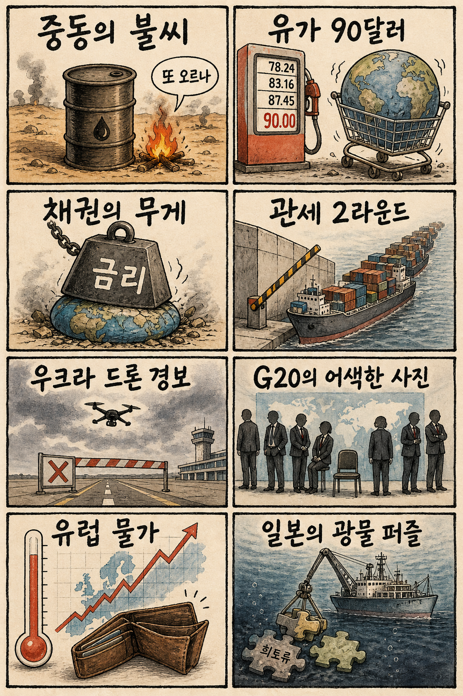
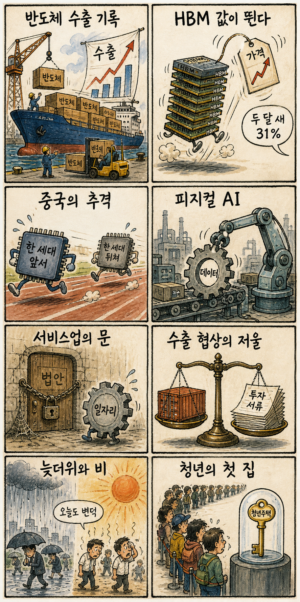

01
크라우드스트라이크 · 228.19→215.07달러 · -5.75%
내용요약 시가 대비 5.75% 하락하며 대형 소프트웨어 종목 중 낙폭이 두드러졌습니다.
예상여파 국내 보안·소프트웨어주에도 단기 밸류에이션 경계 심리를 줄 수 있습니다.
MORNING_BRIEFING_20260902
작성 시각: 2026-09-02 06:37 KST · 직전 미국 정규장과 2026-09-02 KST 당일 공개 기사 기준
직전 미국 정규장인 9월 1일에는 미·이란 충돌 재격화와 국제유가 90달러 돌파, 국채금리 상승이 겹치며 다우 -0.79%, S&P 500 -0.71%, 나스닥 -1.03%로 하락했습니다. 애플 +2.57%, 메타 +3.72%, 인텔 +2.38%는 시가 대비 강했지만 소프트웨어와 장비주는 약했습니다. 오늘 한국 증시는 유가·금리 부담과 8월 반도체 수출 호조 사이에서 대형주 중심의 차별화가 예상됩니다.
| 지수 | 종가 | 등락률 | 한국 증시 시사점 |
|---|---|---|---|
| 다우존스 | 52,766.88 | -0.79% | 유가·경기민감주 부담 |
| S&P 500 | 7,631.47 | -0.71% | 성장주 변동성 경계 |
| 나스닥 종합 | 26,099.77 | -1.03% | 성장주 변동성 경계 |
유가 90달러와 국채금리 상승이 기술주 밸류에이션을 눌렀습니다.
8월 반도체 수출 기록과 메모리 가격은 국내 대형주의 완충 요인입니다.
시가 대비 상승했지만 KOSDAQ은 -1.56%로 내부 차별화가 컸습니다.
30건 보정 표본과 수급·컨센서스 문턱을 검증한 후보가 없습니다.
9월 1일 보고서는 검증 문턱을 통과한 후보가 없어 공식 추천을 내지 않았습니다. 게시 당시 판단은 그대로 유지되며 사후 종목을 추가하지 않습니다.
| 시장 | 종가 | 등락률 | 해석 |
|---|---|---|---|
| KOSPI | 6,835.80 | +0.23% | 1일 시가 대비 +0.76% |
| KOSDAQ | 821.25 | -1.56% | 1일 시가 대비 -1.29% |
| 다우존스 | 52,766.88 | -0.79% | 유가 부담 |
| S&P 500 | 7,631.47 | -0.71% | 금리 민감 |
| 나스닥 종합 | 26,099.77 | -1.03% | 금리 민감 |
메타 +3.72%, 애플 +2.57%로 시가 대비 상승했습니다.
마벨 +2.60%, 인텔 +2.38%, 브로드컴 +1.46%였습니다.
크라우드스트라이크가 시가 대비 -5.75%로 급락했습니다.
오라클 -3.70%, 팔란티어 -1.55%로 밀렸습니다.
내용요약 시가 대비 5.75% 하락하며 대형 소프트웨어 종목 중 낙폭이 두드러졌습니다.
예상여파 국내 보안·소프트웨어주에도 단기 밸류에이션 경계 심리를 줄 수 있습니다.
내용요약 시가 대비 3.72% 상승해 하락장 속 대형 플랫폼주 상대강도를 보였습니다.
예상여파 광고·AI 투자 기대는 국내 플랫폼 심리에 완충 요인이지만 지수 약세와 별개로 봐야 합니다.
내용요약 시가 대비 3.70% 하락하며 기업용 소프트웨어 약세를 반영했습니다.
예상여파 클라우드·AI 인프라 투자주의 수익성 우려가 국내 소프트웨어 밸류에이션에도 부담이 될 수 있습니다.
내용요약 시가 대비 2.60% 상승해 AI 네트워크 반도체 내 차별화를 보였습니다.
예상여파 데이터센터 네트워크 수요의 지속성은 국내 기판·광통신 연결종목의 관찰 포인트입니다.
내용요약 시가 대비 2.57% 상승해 안전 선호 속 대형 기술주의 방어력을 보였습니다.
예상여파 부품 공급망 심리를 지지할 수 있으나 미국 기술주 전체가 하락해 선별 대응이 필요합니다.
유가 90달러 돌파와 나스닥 -1.03%는 운송·화학·성장주와 원화에 부담입니다. 반면 8월 반도체 수출 기록과 HBM 단가 상승은 삼성전자·SK하이닉스의 실적 기대를 지지합니다. 직전 거래일 KOSPI는 시가 대비 +0.76%였고 KOSDAQ은 -1.29%였습니다. 개장 초 원화와 외국인 선물, 정유·항공의 반대 방향, 반도체 대형주의 갭 유지 여부를 확인하기 전 추격매수를 피합니다.
오늘은 추천 없음 — 현금 관망
유가 급등과 지수 변동성 속에서 전일까지의 외국인·기관 수급, 컨센서스 변화, 30건 이상 유사 조건 확률 보정, 예상 손익비 1.5 이상을 동시에 검증한 종목이 없습니다. 종합점수와 상승확률을 임의로 만들지 않습니다.
관심 연결종목 메모리 반도체, 정유, 사이버보안은 뉴스 연결 관찰 대상일 뿐 매수 추천이 아닙니다. 개장 초 갭 상승 종목은 추격매수 금지입니다.
WTI 90달러와 원화 움직임이 외국인 선물에 미치는 영향을 봅니다.
HBM 단가 상승 뉴스가 대형주 시초가 이후 실제 수급으로 이어지는지 확인합니다.
국채금리 상승이 코스닥 성장주 밸류에이션에 주는 압력을 관찰합니다.
수도권 출근길 비, 남부·제주 체감 33도에 맞춰 교통·야외 안전을 점검합니다.
핵심 요약: AI 산업의 병목이 GPU에서 HBM·CPU로 번지는 가운데 한국은 기록적인 HBM 수출단가와 피지컬 AI 데이터 경쟁력을 동시에 확보해야 합니다. 세미콘 타이완의 메모리 청사진과 섀도우 AI 보안 대응도 당일 핵심 이슈입니다.
내용요약 피지컬 AI 경쟁에서 빠른 실패를 학습 데이터로 되돌리는 선순환 체계가 한국의 핵심 승부처라는 당일 보도입니다.
예상여파 로봇·제조 현장의 고품질 데이터 축적 속도가 모델 성능과 상용화 격차를 가르며 센서·제어·비메모리 생태계까지 영향을 줄 수 있습니다.
내용요약 8월 반도체 수출이 역대 최대를 기록하고 HBM 수출단가가 두 달 사이 31% 올랐다는 보도입니다.
예상여파 AI 메모리 수요와 가격 상승은 국내 수출과 기업 실적에 우호적이지만 높은 단가가 고객사의 조달 다변화를 촉진할 가능성도 있습니다.
내용요약 GPU 공급 대기와 HBM 가격 상승이 CPU 품귀로 번지는 데이터센터 공급망 도미노를 다룬 보도입니다.
예상여파 AI 서버 조달 지연과 부품 가격 상승이 클라우드 투자 일정과 서버 제조사의 원가에 부담을 줄 수 있습니다.
내용요약 삼성·SK·LG가 세미콘 타이완에서 AI 메모리 병목 해소를 위한 기술 청사진을 제시한다는 보도입니다.
예상여파 고대역폭 메모리·패키징·기판의 협업 경쟁이 심해지면서 국내 소재·장비 생태계의 기술 검증 기회가 넓어질 수 있습니다.
내용요약 기업 내 승인받지 않은 생성형 AI 사용을 뜻하는 섀도우 AI의 보안 위험을 빠르게 평가하는 정책 도구가 소개됐습니다.
예상여파 기업 AI 확산 속도가 빨라질수록 데이터 유출 방지와 협력사까지 포함한 사용 정책이 도입의 필수 조건이 될 전망입니다.
핵심 요약: 미·이란 충돌과 유가 90달러, 유럽 물가·국채금리 상승이 세계 금융시장의 핵심 부담입니다. 우크라이나 드론 경보와 G20 제재 공조의 균열이 안보 위험을 키우는 가운데 일본은 통상 사무국과 심해 희토류로 공급망 주도권을 모색합니다.
내용요약 우크라이나 대통령이 대규모 드론 출현으로 러시아 영공이 닫힐 수 있다고 경고했다는 당일 보도입니다.
예상여파 공항·에너지 시설의 경계가 강화되면 항공 운항과 물류 보험료가 오르고 휴전 협상의 긴장도도 높아질 수 있습니다.
내용요약 미국이 G20에 이란 제재 동참을 요구한 가운데 유럽은 러시아와의 공동 사진에도 반발했다는 보도입니다.
예상여파 중동 제재와 우크라이나 대응을 둘러싼 동맹국의 이해 차이가 에너지·금융 제재 공조를 약화시킬 수 있습니다.
내용요약 유로존 물가가 3년 만의 높은 수준으로 올라 국채 금리가 급등하고 유럽 증시가 하락했다는 보도입니다.
예상여파 금리 인하 기대가 후퇴하면 유럽 소비와 기업 자금조달이 압박받고 글로벌 장기금리에도 상방 압력이 이어질 수 있습니다.
내용요약 일본이 환태평양경제동반자협정 사무국 유치를 추진한다는 조선일보 보도입니다.
예상여파 통상 규범의 주도권을 강화하려는 움직임으로 회원국 공급망 협력과 신규 가입 협상에서 일본의 영향력이 커질 수 있습니다.
내용요약 일본의 광물 안보 전략에서 심해 희토류 개발이 중요한 퍼즐로 부상했다는 국제 보도입니다.
예상여파 상용화까지 비용과 환경 문제가 남지만 중국 의존도를 낮추려는 핵심광물 공급망 투자가 확대될 수 있습니다.

핵심 요약: 8월 반도체 수출 기록과 HBM 단가 상승이 경제의 버팀목인 반면 비메모리·피지컬 AI 경쟁력은 과제로 남았습니다. 서비스업 제도 개선과 할랄시장 개척, 수도권 비와 남부 늦더위도 오늘의 산업·생활 변수입니다.
내용요약 한국이 피지컬 AI 선도국을 목표로 하지만 비메모리 반도체 경쟁력이 함께 시험대에 올랐다는 당일 보도입니다.
예상여파 로봇용 센서·제어칩·엣지 연산의 국산화가 늦으면 메모리 강점만으로는 전체 가치사슬을 확보하기 어려울 수 있습니다.
내용요약 8월 반도체 수출이 역대 최대를 기록했고 HBM 수출단가가 두 달 사이 31% 상승했다는 보도입니다.
예상여파 수출과 세수, 대형 반도체 실적에는 긍정적이지만 품목 편중과 메모리 가격 변동성은 함께 관리해야 합니다.
내용요약 서비스 산업이 성장과 고용을 주도할 수 있도록 장기간 계류된 서비스산업발전법 논의를 촉구하는 보도입니다.
예상여파 규제 정비와 생산성 투자가 진행되면 일자리 창출 여지가 커지지만 업종별 이해 조정과 안전망 설계가 관건입니다.
내용요약 강원 수출기업들이 약 4000억달러 규모의 할랄 시장 진출을 위해 인증 대응에 나섰다는 지역 보도입니다.
예상여파 식품·화장품 중소기업의 수출 시장이 넓어질 수 있으나 인증 비용과 현지 유통망 확보가 실제 성과를 좌우합니다.
내용요약 수도권 출근길에 빗방울이 예상되고 남부와 제주에는 체감 33도의 늦더위가 이어진다는 뉴스1 예보입니다.
예상여파 출근길 교통과 야외 작업 안전을 점검하고 남부 지역은 온열질환과 국지성 소나기에 동시에 대비해야 합니다.
